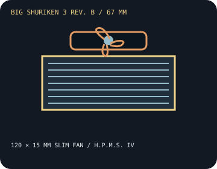

[ INDIVIDUAL COMPONENT // COOLING ]
Scythe Big Shuriken 3 Rev. B
A 67 mm down-draft cooler with the slim Kaze Flex II 120 fan and Scythe H.P.M.S. IV mounting system.

IDENTIFICATION: This entry is Rev. B, with its listed mounting hardware and slim fan. Do not assume earlier Big Shuriken 3 bundles have the same socket support.
Manufacturer specifications
| Overall dimensions | 122 × 122 × 67 mm with fan. The included Kaze Flex II 120 Slim is 120 × 120 × 15 mm. |
|---|---|
| Fan / thermal limits | Kaze Flex II 120 Slim PWM, up to 1,800 RPM (PWM range 300–1,800 RPM as published), 120 mm. No radiator. Scythe does not publish a universal CPU TDP ceiling for this cooler; CPU, case airflow, and fan curve determine achievable thermals. |
| Mounting kit and sockets | Rev. B uses Scythe H.P.M.S. IV mounting hardware; its current published socket support includes Intel LGA 1851/1700/1200/115x and AMD AM5/AM4. Confirm the bracket included with the actual revision and follow the Rev. B guide before mounting. |
| Clearance caveats | Reserve 67 mm height and a 122 × 122 mm footprint. The low-profile fan can overhang RAM or board heatsinks; inspect the motherboard layout. Replacing the supplied slim fan with a 25 mm-thick fan changes total cooler height to about 77 mm and may affect mounting/clearance. |
Safe installation and maintenance
Install with the included H.P.M.S. IV parts and follow the Rev. B manual. Check memory and rear-I/O clearances before securing the cooler, and verify the bracket shipped with the unit. Keep replacement fan thickness within the enclosure's measured allowance.
- Switch off and unplug the computer before mounting or cleaning.
- After service, verify fan operation and monitor CPU temperature before prolonged use.
Manufacturer sources
- Scythe — Big Shuriken 3 Rev. B product informationRev. B dimensions, slim fan, and H.P.M.S. IV mounting details.
- Scythe — Big Shuriken 3 Rev. B user manual (PDF)Manufacturer mounting and compatibility instructions.
- Scythe — AM5 socket compatibility noticeManufacturer guidance for checking bracket support with the exact product revision.
Static catalog reference only; confirm revision-specific socket support and actual case clearance.